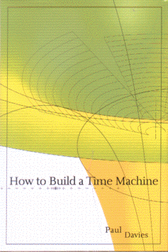

How to Build a Time Machineby Paul Davies
publisher: Viking Publishing
Non-fiction, 125 pages | 
(book cover art, Copyright © 2002 Paul Davies)
Used with Permission. |
Return to the Book MenuPrevious|Next
Description:
An "instruction book" on how to build a time machine, including some of the theory behind time machines. (You supply the materials.)
Recommended for: Recommended for: people interested in time travel, people curious about the nature of time and the fabric of the universe, time travelers trying to get back home (you know who you are...)
Did-you-read questions:
Deadline: February 1, 2005.
These should be easy questions, but you should have the questions ready and keep an eye out during your reading. Each question should be answered with 1-2 sentences.
Note: these questions are not probably not the most important part of the book! Your essay will not have to cover these questions!
- What "simple" method allows you to stretch or shrink time?
- In the time it takes Sam to fall into a black hole, how much time passes by in the outside universe?
- What is the formal name for the proposed physical law against dimpled space-time nudity?
- What are the four main components of the author's planned time machine?
- What movie demonstrates the matricidal paradox?
Report Questions:Deadline: Peer Review Session on February 8, 2005; paper due February 10, 2005.
You should write a 3 - 4 page essay on one of the following questions. Your essay should include examples and references to the book, unless otherwise specified. Page number references are sufficient for citing material from the primary book. If you use outside materials, cite your sources in full. If you would rather write on a different topic, you may, but clear it with Mr. Howe or Ms. Sullivan first.
- Do you feel that the author fulfilled the title of the book? Give examples of what he did or did not include to help make your case.
- The author mentions that time travel has implications about the meaning of "free will." Based on the book, what evidence do you see for or against the limitations of free will? Can you draw any conclusions?
- Towards the end of the book, the author mentions several ramifications of the possibility of time travel, along with several possible ways nature might resolve the problems it causes. Which of these make sense to you, and/or which do you disagree with?
- Certainly, we live in an age of wonders that people not so long ago would not have thought possible: the laptop computer, the cellular phone, the space shuttle, plastics, superconducting levitation, and many, many more. Do you think that time travel is a worthwhile and/or practical goal to pursue? Use examples from the book.
Graphic and Presentation:
Deadline: February 21 - March 3, 2005.You will give a 10 minute presentation on both of the following:
- Convince your peers that they should (or should not) read this book. (This may include a brief summary of the book.) Give examples of what was cool or worthwhile in the book, and what you got out of it (or didn't).
- Describe a (realistic) science idea that you learned about in this book, citing information from at least 2 external sources (other than the dictionary). If you would like help choosing or understanding an idea from your book, you are invited to come talk to Mr. Howe or Ms. Sullivan.
Note: This presentation should not be just a reading of your paper!Along with this presentation, you should have a graphic that will go with it. A Power Point presentation is recommended, but if you have a special idea for a something else, such as a model, an original video presentation, or a well done drawing/ painting/ sculpture/ etc., you may do so, provided it involves a similar level of effort and polish. Speak to Mr. Howe or Ms. Sullivan first if you are considering an alternate graphic format to the Power Point.
Return to the Book MenuPrevious|Next